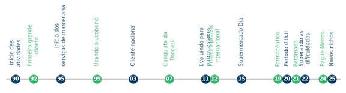

Telemetria em Tempo Real
Alertas automáticos, gráficos claros e relatórios auditáveis.
Monitoramento de temperatura, umidade, CO₂ e consumo de água com telemetria remota em tempo real, conformidade com RDCs da Anvisa e compromisso com ODS e ESG.
Alertas automáticos, gráficos claros e relatórios auditáveis.
Evidências, histórico criptografado e trilha de auditoria.
Eficiência energética, gestão de água e responsabilidade ambiental.
Temperatura e umidade para termolábeis em farmácias e hospitais.
Detecção de vazamentos e fechamento por válvula eletrônica.
Liga/desliga automático do ar-condicionado com eficiência energética.
Projetos sob medida com sensores, telemetria, IA e automação.
Fale com a ThermoSafe e veja como levamos confiabilidade a cada grau — e a cada número.